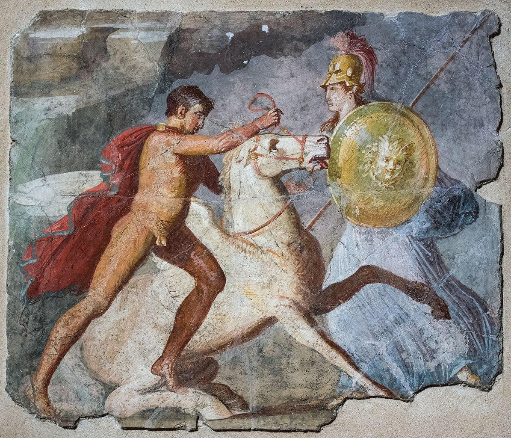
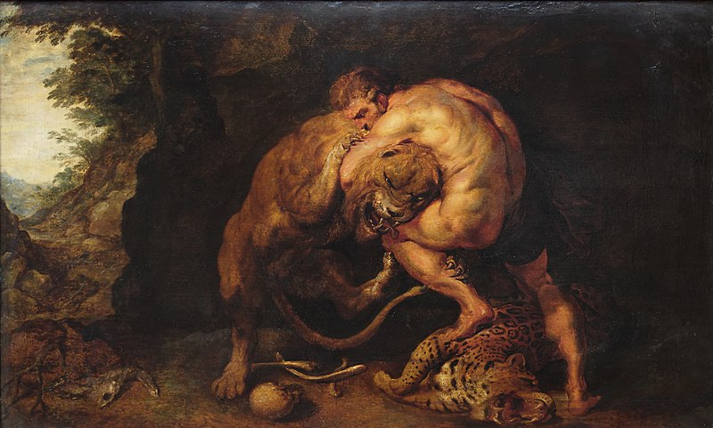
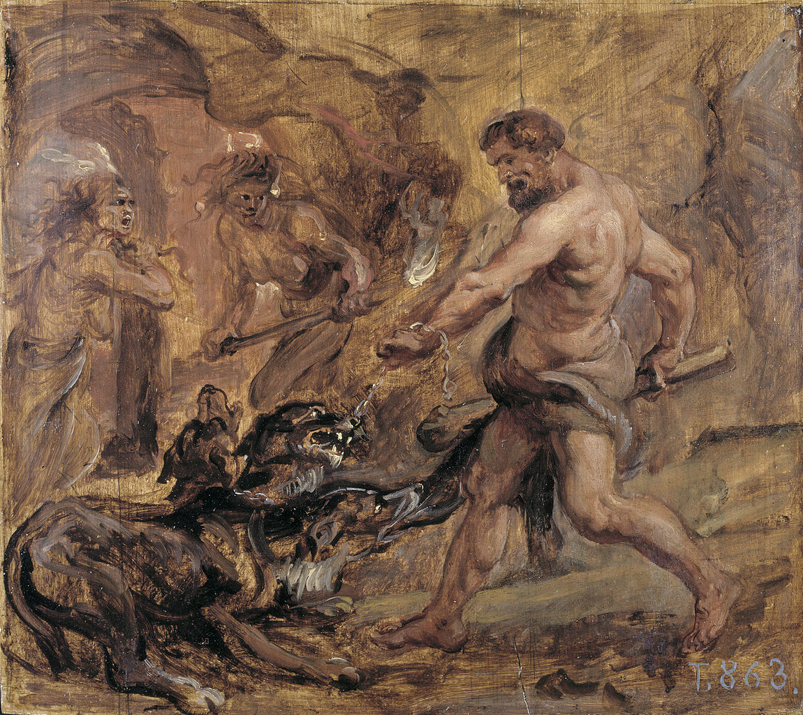

Pegasus is a winged divine stallion, usually depicted as pure
white in color, in Greek mythology. He was sired by Poseidon, in
his role as horse-god, and foaled by the Gorgon Medusa. Pegasus
was the brother of Chrysaor, both born at a single birthing when
their mother was decapitated by Perseus. Greco-Roman poets wrote
about his ascent to heaven after his birth and his obeisance to
Zeus, king of the gods, who instructed him to bring lightning
and thunder from Olympus.

Bellerophon,Pegasus and Athena, Pompeii, first half of the 1st century
Nemean Lion
The Nemean lion was a monster in Greek mythology that lived at
Nemea. Eventually, it was killed by Heracles (Hercules). Because
its golden fur was impervious to attack, it could not be killed
with mortals' weapons. Its claws were sharper than mortals'
swords and could destroy any strong armour. In Bibliotheca,
Photius wrote that the dragon Ladon, who guarded the golden
apples, was his brother.

Hercules' fight with the Nemean lion, Pieter Paul Rubens.
Cerberus
In Greek mythology, Cerberus, often referred to as the hound of
Hades, is a multi-headed dog that guards the gates of the
Underworld to prevent the dead from leaving. He was the
offspring of the monsters Echidna and Typhon, and was usually
described as having three heads, a serpent for a tail, and
snakes protruding from multiple parts of his body. Cerberus is
primarily known for his capture by Heracles, the last of
Heracles' twelve labours.

Hercules and Cerberus. Oil on canvas, by Peter Paul Rubens.